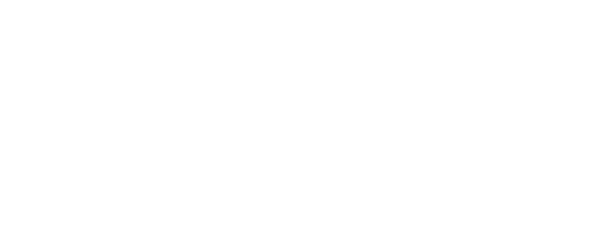

...lavori in corso...

Associazione di promozione sociale
a tutela dei piccoli eventi musicali
IL MANIFESTO
Presentiamo l'associazione “Musicisti al Centro”, che si propone di tutelare i piccoli eventi musicali e chi vi lavora, di dimostrare il valore socialmente ed economicamente positivo di queste pratiche, e la necessità da parte delle istituzioni locali e dello Stato di un'adeguata regolamentazione, se non addirittura di una vera e propria riforma.
Dopo anni di formazione, esperienza professionale e sfruttamento lavorativo, la costituzione di tale movimento è fisiologica e si determina in un quadro che rappresenta, a nostro avviso, un punto di non ritorno.
Ci saranno dei motivi secondo i quali la quasi totalità di queste manifestazioni artistiche è relegata a un vero e proprio meccanismo di mercato nero?
Secondo noi sì:
- la legalità del rapporto organizzatore-lavoratore è economicamente insostenibile e in assenza di tutele;
- le burocrazie sono penalizzanti e le normative vigenti anacronistiche e fuori contesto;
- la riscossione dei diritti di esecuzione grava sproporzionatamente sull'economia dei piccoli eventi.
Tutto questo annichilisce le pratiche necessarie alla performance e alla fruizione della popular music, amplificando forme di marginalizzazione e isolamento ormai tipiche della società odierna.
Noi musicisti siamo inevitabilmente portati ad autodenunciare un compromesso illegale, fatto alla luce del sole e che dura ormai da decenni: musicisti e organizzatori a spartirsi le briciole, sotto lo scacco di un malsano rapporto di sottomissione all'autorità di turno, la quale decide se chiudere un occhio o chiudere un locale.
Sfidiamo, anzi, invitiamo chiunque a delineare pratiche ad oggi esistenti, che siano legali e al contempo sostenibili. Fatevi avanti.
LO STATUTO
Riportiamo le finalità e le attività dichiarate nello statuto dell'Associazione.
L'Associazione si costituisce con la finalità di:
- valorizzare la fattispecie di “piccoli” eventi e manifestazioni artistiche musicali;
- dimostrare su più punti il valore sociale ed economico di tali iniziative, e il vantaggio alla loro tutela e regolamentazione da parte dello Stato e delle istituzioni;
- promuovere l'inclusività sociale attraverso la cultura e le pratiche della “popular music”;
- valorizzare i luoghi già esistenti sul territorio che consentono la creazione e fruizione della “popular music”, siano essi pubblici o privati, e favorire la creazione di nuovi;
- raccogliere e scambiare informazioni sugli aspetti normativi della categoria;
- sensibilizzare il pubblico e l'azione politica sulla positività di tali finalità;
- creare rete e collaborare con altri enti che abbiano finalità simili.
L'Associazione quindi, a titolo indicativo e non esaustivo, potrà:
- operare sul piano locale aprendo un dibattito, informando e proponendo soluzioni sui regolamenti in materia, coinvolgendo istituzioni, altre associazioni, fruitori e residenti;
- promuovere la socialità intrinseca alle attività dell'Associazione, organizzando spettacoli, jam session, concerti, rassegne, festival e simili;
- attivare uno o più luoghi di aggregazione, confronto, informazione, divulgazione, buona pratica e creazione artistica e musicale, anche in prospettiva della valorizzazione dei beni culturali e della riqualificazione dei beni pubblici non utilizzati;
- creare una narrativa efficace sulle finalità dell'Associazione e sullo stato attuale rispetto alle stesse;
- avviare e promuovere attività di ricerca scientifica sul settore dei “piccoli eventi” e sul mercato nero nel quale abitualmente riversano, anche collaborando con università e conservatori;
- fare pressione sulle istituzioni per modificare leggi e policy in ambito musicale, rafforzando la cultura della legalità.
L'Associazione eserciterà le seguenti attività di interesse generale previste dall'art. 5, comma 1, del D.Lgs. n. 117/2017:
- interventi e servizi sociali ai sensi dell'articolo 1, commi 1 e 2, della legge 8 novembre 2000, n. 328, e successive modificazioni, e interventi, servizi e prestazioni di cui alla legge 5 febbraio 1992, n. 104, e alla legge 22 giugno 2016, n. 112, e successive modificazioni;
- educazione, istruzione e formazione professionale, ai sensi della legge 28 marzo 2003, n. 53, e successive modificazioni, nonché le attività culturali di interesse sociale con finalità educativa;
- interventi di tutela e valorizzazione del patrimonio culturale e del paesaggio, ai sensi del decreto legislativo 22 gennaio 2004, n. 42, e successive modificazioni;
- ricerca scientifica di particolare interesse sociale;
- organizzazione e gestione di attività culturali, artistiche o ricreative di interesse sociale, incluse attività, anche editoriali, di promozione e diffusione della cultura e della pratica del volontariato e delle attività di interesse generale di cui al presente articolo;
- radiodiffusione sonora a carattere comunitario, ai sensi dell'articolo 16, comma 5, della legge 6 agosto 1990, n. 223, e successive modificazioni;
- promozione della cultura della legalità, della pace tra i popoli, della nonviolenza e della difesa non armata;
- promozione e tutela dei diritti umani, civili, sociali e politici, nonché dei diritti dei consumatori e degli utenti delle attività di interesse generale di cui al presente articolo, promozione delle pari opportunità e delle iniziative di aiuto reciproco, incluse le banche dei tempi di cui all'articolo 27 della legge 8 marzo 2000, n. 53, e i gruppi di acquisto solidale di cui all'articolo 1, comma 266, della legge 24 dicembre 2007, n. 244;
- riqualificazione di beni pubblici inutilizzati o di beni confiscati alla criminalità organizzata.
Per leggere lo statuto completo, scrivici a
musicistialcentro@gmail.com
Vuoi sostenerci e mantenerti aggiornato?
Iscriviti alla mailing list
oppure unisciti alla community WhatsApp
cliccando il pulsante qui sotto.
Puoi anche aiutarci
condividendo questa pagina
tramite QR-CODE:
GRAZIE